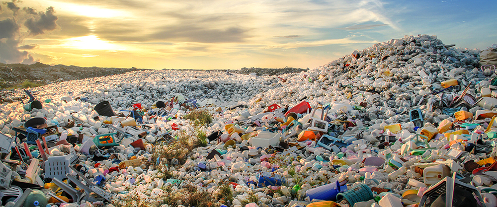

Waste Wonderland

Description
This dish is a real feast for the eyes, with its bright colors and endless array of disposable products.
Our culture of overconsumption and disposability is leading to overflowing landfills, plastic-filled oceans, and environmental devastation. And with our planet's resources finite and our waste piling up, we're setting ourselves up for a future of scarcity and environmental collapse.
Ingredients
- Overconsumption
- Disposable culture
- Apathy
- Ignorance
Steps
- Embrace a culture of overconsumption, where convenience and disposability are paramount.
- Stock up on single-use items, cheap electronics, and fast fashion.
- Ignore the fact that our planet's resources are finite and that our waste is piling up.
- Discard everything without a second thought, leading to overflowing landfills, plastic-filled oceans, and environmental devastation.
- Watch as our disposable paradise becomes a wasteland that can no longer sustain life.